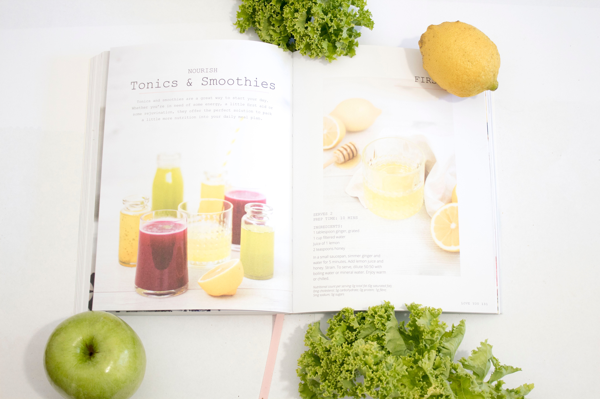

<div class="exploreRecipe-page">
  <div class="exploreRecipe-hero">
    <div class="exploreRecipe-heroCol1">
      <div class="exploreRecipe-heroTitle">EXPLORE ALL RECIPES</div>
      <div class="exploreRecipe-heroImg">
        
      </div>
    </div>
    <div class="exploreRecipe-heroCol2">
      <div class="exploreRecipe-heroQuote">
        <span class="blueFont dropCap">Real</span> cooking<br />
        is more about following<br />
        your <span class="blueFont">heart</span><br />
        than following recipes
      </div>
    </div>
  </div>
  <div class="exploreRecipe-page-instructions">
    Explore your list of added recipes below.<br />Haven't added any yet?
    <a href="#addRecipe">Add one now!</a>
  </div>
  <div>
    <!-- Shows all recipes dynamically  -->
    <div id="allData"></div>
    <!-- Brings up recipe to edit -->
    <span id="data"></span>
  </div>
</div>

<!-- NOTES -->
<!-- <div class="getRecipes">
    <!-- <button id="getIndivRecipe">Get Fish</button>
    <div id="singleuserData">
      <h2>Get individual recipe</h2>
      <span id="data"></span>
    </div> -->
<!-- <button id="getAllRecipes">Get All Recipes</button>
    <div id="userData">
      <h2>All Recipes</h2>
      <span id="data"></span>
      <div id="allData"></div>
    </div>
  </div>  -->
